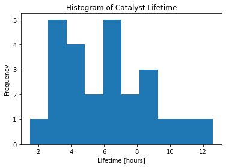

Confidence Intervals
Contents
12.3. Confidence Intervals¶
Further Reading: §5.1 in Navidi (2015)
12.3.1. Learning Objectives¶
After studying this notebook, attending class, completing the home activities, and asking questions, you should be able to:
Explain the correct interpretation of a 95% confidence interval
Using a picture, explain the 68-95-99.7 rule to someone that just finished Calculus II
Calculate any size confidence interval (95%, 99%, etc.) using z- or t-distribution
# load libraries
import scipy.stats as stats
import numpy as np
import math
import matplotlib.pyplot as plt
12.3.2. Motivation: Catalyst Life Example¶
Imagine this summer you have an internship at a specialty chemical company. You are tasked with testing a new catalyst. You receive 25 test samples of catalyst. You record the number of hours of operation before each test sample experiences a substantial decrease in yield (i.e., fails). Below are the data.
lifetime = [3.2, 6.8, 4.2, 9.2, 11.2, 3.7, 2.9, 12.6, 6.4, 7.5, 8.6,
4.5, 3.0, 9.6, 1.5, 4.5, 6.3, 7.2, 8.5, 4.2, 6.3, 3.2, 5.0, 4.9, 6.6]
With these data, you can use statistics to ask two fundamental questions:
What is the population mean lifetime? (We want an uncertainty range.)
Does this sample of 25 catalysts have the manufacturer’s promised specifications?
# Make a histogram
plt.hist(lifetime)
plt.title("Histogram of Catalyst Lifetime")
plt.xlabel("Lifetime [hours]")
plt.ylabel("Frequency")
# Compute the mean and standard deviation
xbar = np.mean(lifetime)
s = np.std(lifetime)
print("Lifetime Average: {} hours".format(xbar))
print("Lifetime Standard Deviation: {} hours".format(s))
Lifetime Average: 6.064 hours
Lifetime Standard Deviation: 2.7185113573424697 hours

12.3.3. Definition and Formula¶
Let’s focus on the first question from above. We want to construct lower and upper bounds using the 25 observations above such that if we repeated our calculation many many times (i.e., the manufacture kept sending up batches of 25 samples to test), our process would capture the true mean X% (i.e., 95%, 99%, etc.) of the time.
Key Insights:
We are assuming the lifetime of a catalyst can be modeled as a random process (probability distribution) with an unknown mean.
Frequentist statistics cares about the long-term error rate of estimation methods.
We are not making probabilistic statements about the catalyst lifetime. For example, we are not saying there is an X% chance the true mean falls within this interval. Further reading.
To make probablistic statements, we would need to use Bayesian statistics (i.e., credibility interval).

Image credit: https://towardsdatascience.com/understanding-the-68-95-99-7-rule-for-a-normal-distribution-b7b7cbf760c2
The normal distribution curve is often associated with the 68-95-99.7 rule. This rule establishes that 68% of the population falls within 1 standard deviation of the man, 95% of the population falls within 2 standard deviations of the mean, and 99.7% of the population falls within 3 standard deviations of the mean.
A confidence interval is a range of values around a parameter, such as the mean, in which the parameter is believed to be found. The formula to determine the confidence interval for a parameter is:
Elements:
\(\bar{x}\) : sample mean
\(z^*\) : z-score
\(s\) : sample standard deviation
\(n\) : sample size
12.3.4. Example Calculation¶
Calculate a 95% confidence interval for the catalyst example.
xbar - 1.96*s/math.sqrt(len(lifetime))
4.998343547921752
xbar + 1.96*s/math.sqrt(len(lifetime))
7.129656452078248
95% Confidence interval for mean catalyst lifetime: 5.00-7.13 hours
Alternately, we can use Python or the z-table to determine \(z^*\).
See the code below for various confidence interval calculations.
## calculate 95% confidence interval
n = len(lifetime)
zstar95 = stats.norm.interval(0.95)
low = xbar + zstar95[0]*s/math.sqrt(n)
high = xbar + zstar95[1]*s/math.sqrt(n)
print("95% confidence interval: [",round(low,2),",", round(high,2),"] hours")
## calculate 90% confidence interval
n = len(lifetime)
zstar90 = stats.norm.interval(0.9)
low = xbar + zstar90[0]*s/math.sqrt(n)
high = xbar + zstar90[1]*s/math.sqrt(n)
print("90% confidence interval: [",round(low,2),",", round(high,2),"] hours")
## calculate 99% confidence interval
n = len(lifetime)
zstar99 = stats.norm.interval(0.99)
low = xbar + zstar99[0]*s/math.sqrt(n)
high = xbar + zstar99[1]*s/math.sqrt(n)
print("99% confidence interval: [",round(low,2),",", round(high,2),"] hours")
95% confidence interval: [ 5.0 , 7.13 ] hours
90% confidence interval: [ 5.17 , 6.96 ] hours
99% confidence interval: [ 4.66 , 7.46 ] hours